Authentic Asian cuisine, made by Japanese hands.
Sushi, hand-pulled noodles and fire. Hay Riad, Rabat, since 2009.
Book table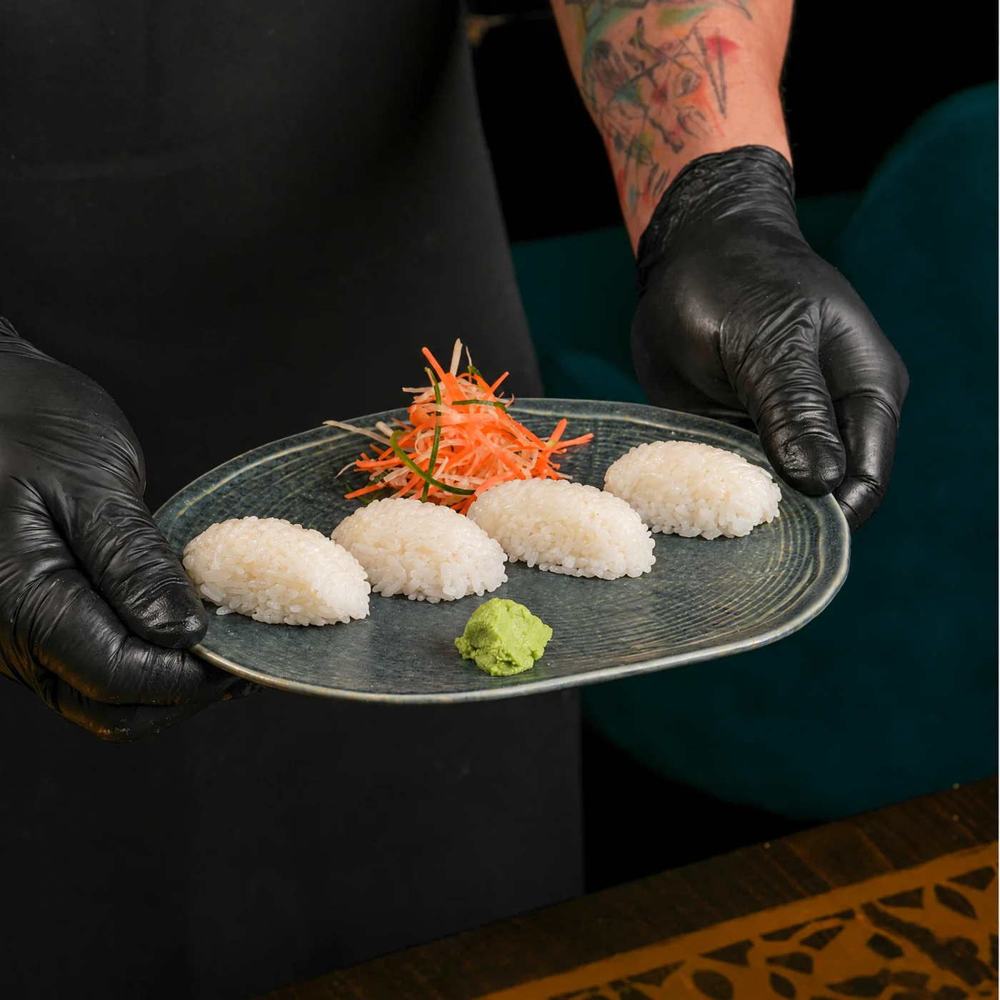
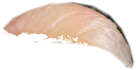
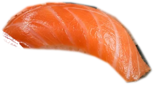
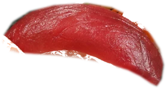
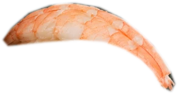
Aburi. Drag across the fish to sear it
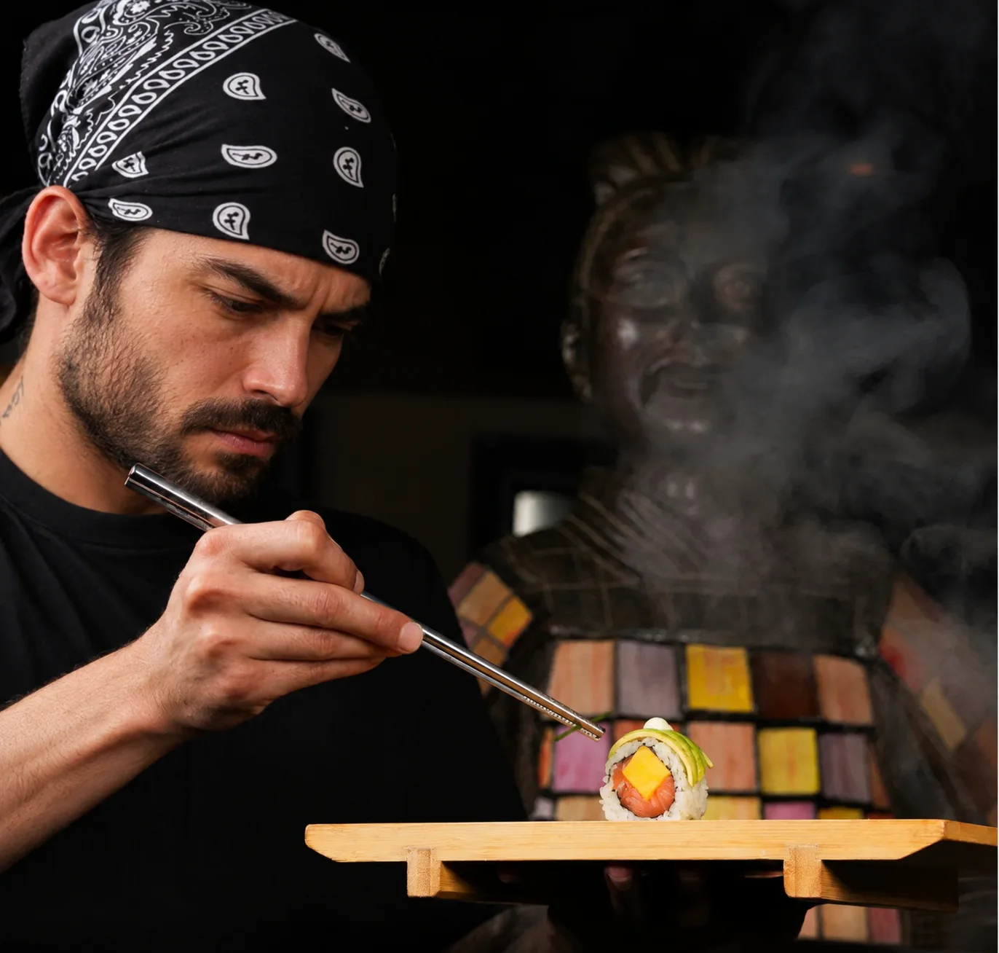
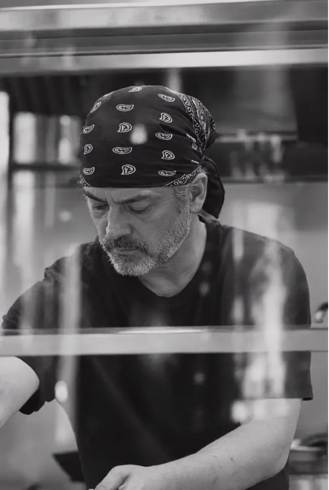
The hands behind the counter.
Our kitchen is led by Japanese chefs, and it shows in the small things: the seasoning of the rice, the line of the cut, the finish on every piece.
Nagi has been feeding Hay Riad since 2009.
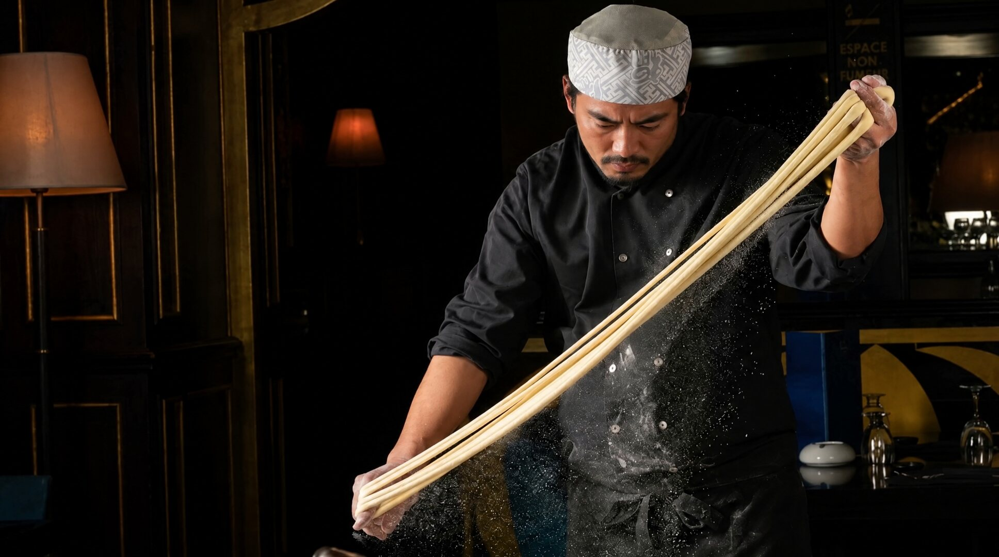
Pulled by hand, in our kitchen.
Stretched, folded and stretched again, until the dough gives you noodles with a bite.
From the pass.
A few of the plates people come back for.
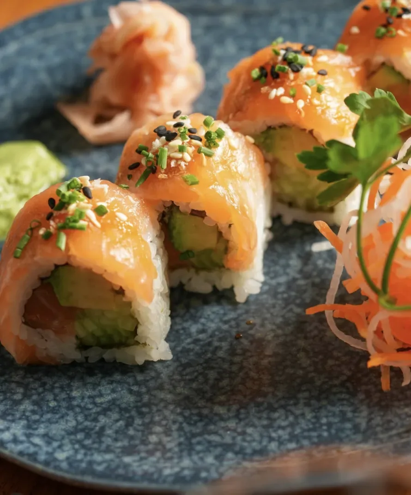
Salmon & avocado roll
Fresh salmon over avocado and seasoned rice, sesame and herbs on top.
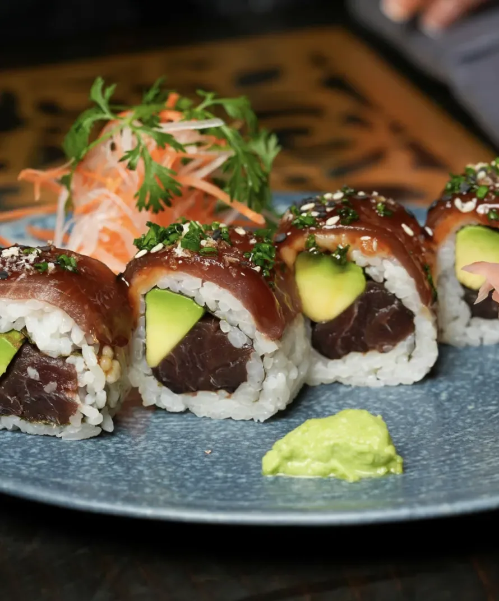
Red tuna roll
Lacquered red tuna, cucumber and avocado.
Hand-made noodles
Pulled in house, wok-tossed with vegetables and a dark, glossy sauce.
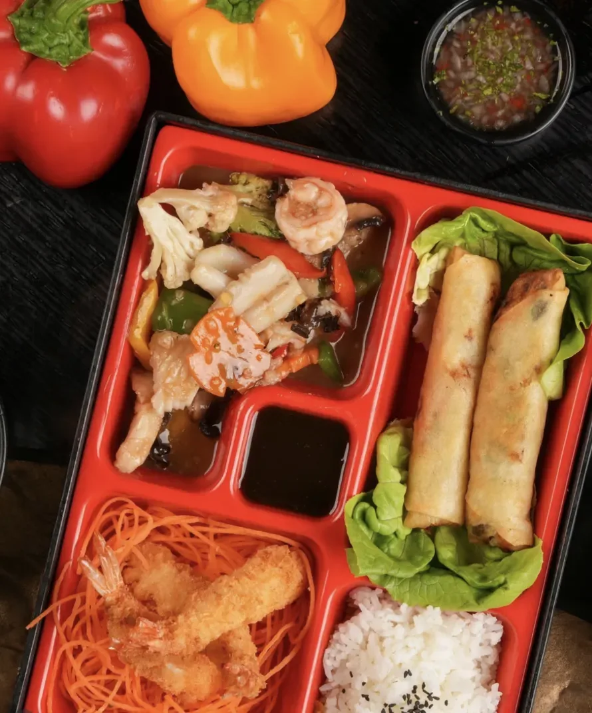
The bento box
Rice, tempura shrimp, spring rolls, salad and sauce, each in its place.
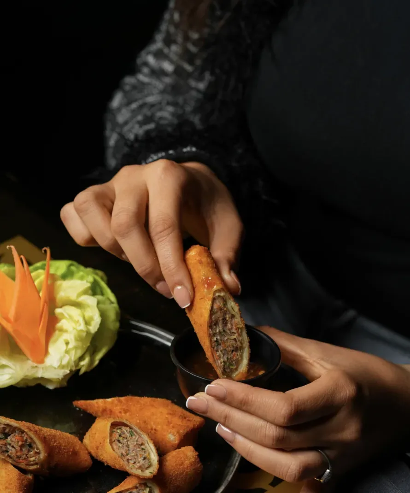
House nems
Rolled by hand and fried crisp, with lettuce and herbs for wrapping.
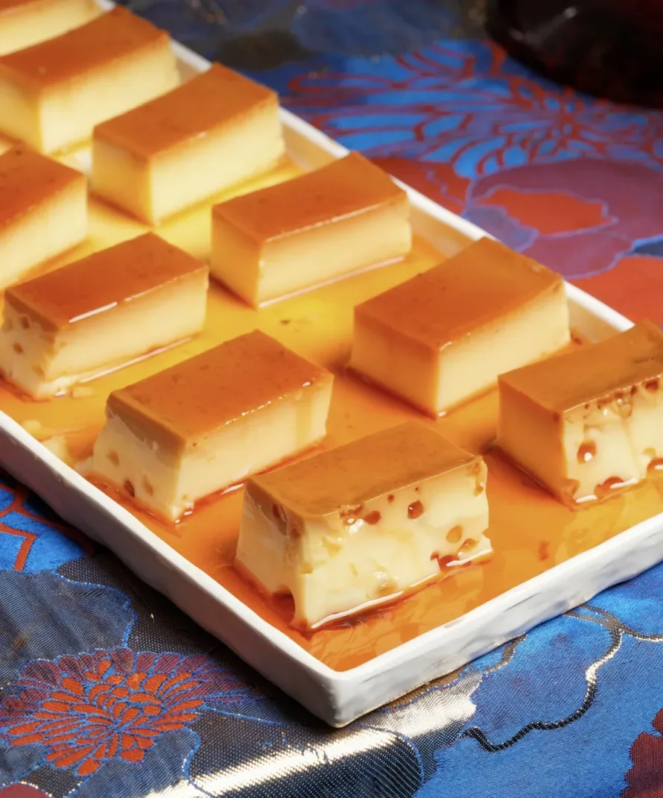
Crème caramel
Soft, cold and cut in squares, under its own caramel.
The full card is just below, or order on Glovo.
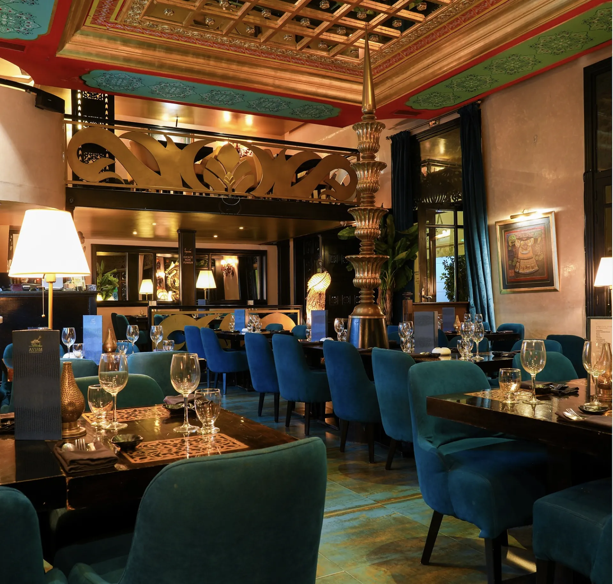
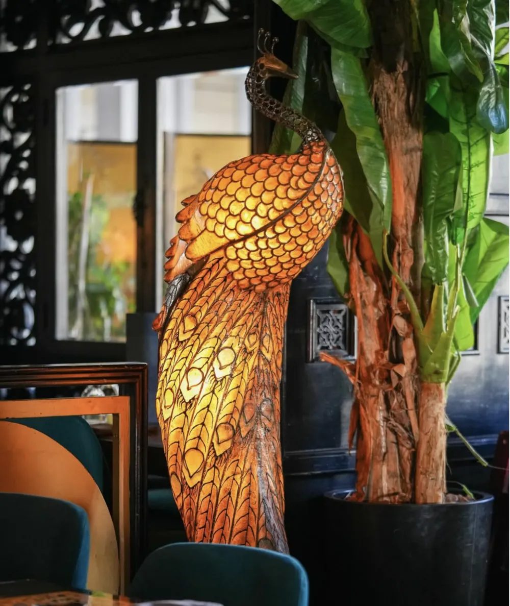
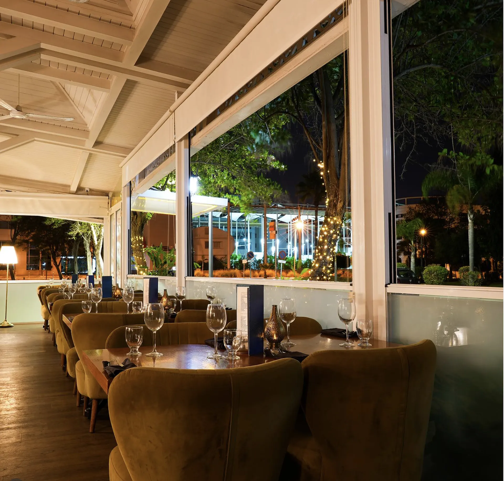
Step inside.
Carved wood, blue velvet, a gold ceiling and a peacock made of light. Inside or on the terrace, on Avenue des Orangers.
The card.
A taste of the menu. Prices in dirhams. The full card is at the table.
Sashimi
Four pieces
- Salmon
- 50
- Scallop
- 60
- Salmon carpaccio
- 55
- Red tuna
- 45
- Red tuna carpaccio
- 50
Nigiri
By the pair
- Salmon Shaké
- 35
- Red tuna
- 40
- Scallop Hotate-gai
- 50
- Eel Unagi
- 50
Rolls
Makimono, six pieces
- Red tuna roll Lacquered tuna, cucumber, avocado
- 85
- Red tuna maki
- 35
Sushi at lunch
Served with rice and vegetables
- Japs 1 4 cream cheese, 4 eby fry, 3 beef and cheese skewers
- 120
- Japs 2 Vegetable salad, 3 chicken skewers
- 85
- Japs 3 4 California shake, 4 California classic, 4 salmon sashimi, 3 chicken meatball skewers
- 130
Business lunch
Each with a soda
- Thai Chicken nems, fresh noodles with Szechuan chicken
- 110
- China Angel hair, Kung Pao chicken, steamed rice
- 110
To share
Nems, sushi, skewers, noodles and water
- Formula for two 4 nems, 18 sushi, noodles or 4 yakitori
- 295
- Formula for four 8 nems, 24 sushi, 8 skewers, Nagi fresh noodles
- 645
Or have it delivered: order on Glovo.
A table for tonight?
- Open
- Every day, 12:00 to 23:30
- Telephone
- +34 647 591 229
- Delivery
- Order on Glovo
- @nagi.rabat